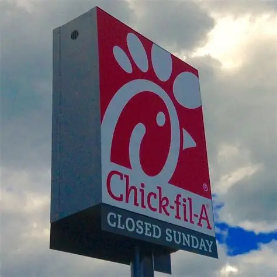
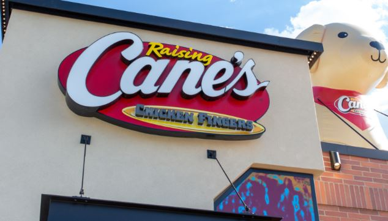

EVERGREEEN'S FOOD REVIEW

9/10 tip:Get a bowl, put chicken nuggets,chick-fil-a sauce (or any sauce of your choice or you can do mutiple sauces too)
mac and cheese, and fries and mix it all togther to get a yummy meal! a problem: This place closes on sunday, but that's when many people want their food. Maybe try closing early instead of closing all the way.
Chick-fil-A Website

9.5/10 tip:First get burger fries then get actual fries and put it into the box that the burger fries came in and dump sauce and mix it up. A problem:Inconsisent Quality and Service, Customers frequently report slow service, wrong orders, and subpar food, often linked to understaffing and high employee turnove at franchise locations.
Burger King Website

7.5/10 tip:Get the new steak nuggets put it into a bowl and mix it with mac and cheese, shake then enjoy the satly and savory meal. A problem: Hygeine Issues are a big problem at this place. Inspections have found mold like subtances on soda machine nozzles and missing ceiling tiles in prep areas in some locations.
Arby's Website

9/10 tip: Get two pieces of bread put chicken and fries and canes sauce inside any enjoy! a problem:Sometimes the chicken is cooked raw on the end whenever i get it. It could cause food poisoining.
Cane's Website

8.5/10 tip:Get chicken nuggets and theres this little space in the middle and then you put the straw thru it, then on the other side of the box put fries then you have 3 in 1! A problem:In 2017, a BBC investigation revealed fecal bacteria contamination in ice at McDonald's. G
Mcdonalds Website